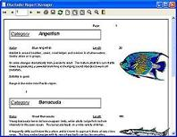

English
Report Manager
|
Description |
|
| Order | |
| Web Server | |
| Screenshots | |
| Documentation | |
| Support | |
| Related links | |
 |
|
Application description
Report manager is a reporting application (Report Manager Designer) and a set of libraries and utilities to preview, export or print reports. Include native .Net and Delphi/C++Builder libraries, ActiveX component and also standard dynamic link library for use in any language like GNU C.
 |
 |
The reporting engine includes a TCP enabled Report Server so thin clients can obtain reports processed in the server. Also a fully functional web report server application is available, generating Adobe PDF files on the fly.This is a true net and web report server with no license fees and multiprocessor support.
ActiveX plugin allows embedding the preview and print in Microsoft Internet Explorer.
Order
The product is free, you can order support and other services.
License
Report Manager is opensource under the MPL license model, (including a GPL allowed use clause) so you can use it in your commercial software but any enhacements to the engine must be published
Features overview
It works in Windows and Linux, You can distribute the report designer, so you modify the reports without modifying your application, the result can be exported to Adobe PDF format.
Report Manager has many features, including exclusive ones like report libraries,metafile report ,use device fonts, external sections and child subreports.
If you are using Delphi/Kylix/Builder, you can include the reporting engine in your executables, that includes the preview window, complete print dialog, report options dialog...
Current version
Click here for current version new features.
Development environments
Click here to see an overview of development environments supported.
For a detailed description see the feature list.
Visit also the useful Documentation and F.A.Q.